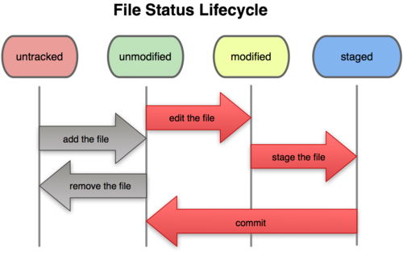

git 還原技巧
還原技巧
新增檔案時
檔案還沒加追蹤時（untracked），清空工作目錄
- 顯示此次清除的檔案（預期要刪掉的檔案）：
git clean -n - 強制清除檔案：
git clean -f
- 顯示此次清除的檔案（預期要刪掉的檔案）：
檔案已加入追蹤，清空工作目錄
- 還原工作目錄上已更改的檔案（已在commit過的檔案）：
git checkout -- files(你要還原的檔案)
- 還原工作目錄上已更改的檔案（已在commit過的檔案）：
檔案加入到索引，退到工作目錄
- 加入索引的檔案還原到工作目錄：
git reset HEAD

- 加入索引的檔案還原到工作目錄：
版本還原(reset)
- 索引檔案>還原到工作目錄：
git reset HEAD - 還原前兩個版本：
git reset HEAD^^ - 還原前兩個版本，所有更新檔案都放棄：
git reset HEAD^^ --hard - 還原到特定 commit：
git reset commit編號 --hard - git reset 參數介紹
- 觀看詳細歷史紀錄：
git reflog可以使用
git reflog查看已經被刪除的檔案 commit編號，再用git reset commit編號 --hard找回來
- 索引檔案>還原到工作目錄：
查看版本(checkout)
- 回頭觀看版本內容：
git checkout 編號 - 返回最新的版本：
git checkout master(分支名稱) - 還原工作目錄上已更改的檔案 ：
git checkout -- <file>
- 回頭觀看版本內容：
checkout 與 reset 差異
- checkout 是移動 HEAD
- reset 是移動 branch 及HEAD